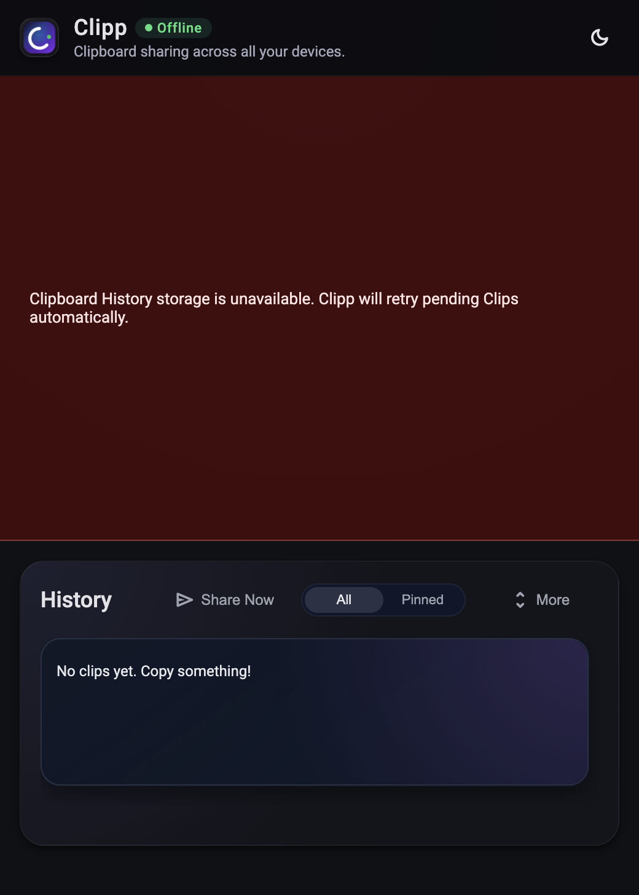
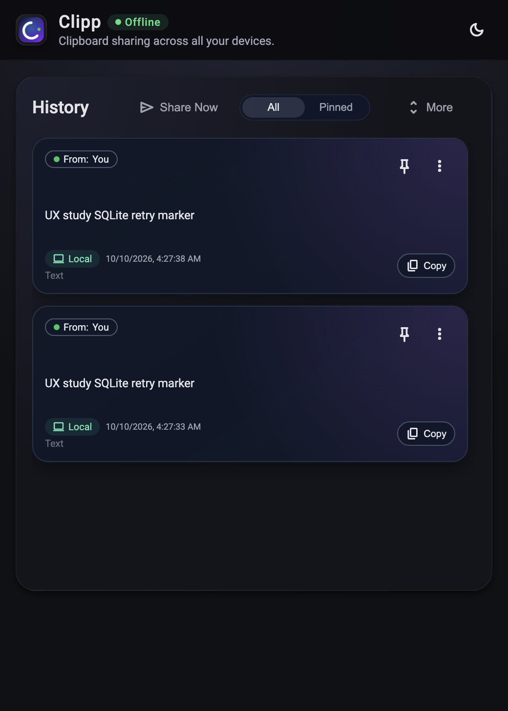
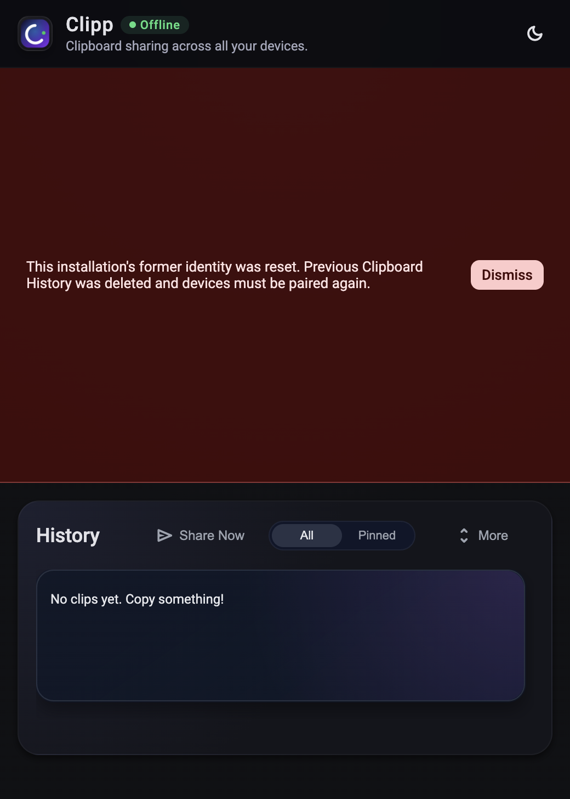

Clipp native recovery evidence
520 × 728 content; DPR 2. Isolated synthetic data; no OS clipboard qualification.

Real SQLite writer contention: pending captures, oversized banner EARLY SAMPLE: still pending after lock release; filename does not indicate success
EARLY SAMPLE: still pending after lock release; filename does not indicate success
Automatic retry complete: two submitted synthetic captures, error cleared
Actual Identity Loss: automatic relaunch, new identity, cleared history, notice